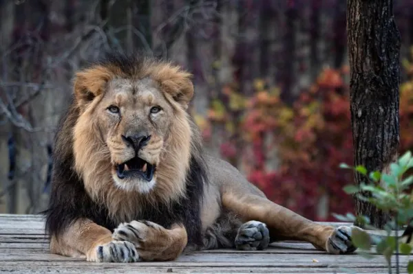

Leão-do-Katanga
Entre os tipos de leões e suas características, o leão-do-Katanga ou de Angola (Panthera leo bleyenberghi) está distribuído pelo Sul da África. É uma subespécie grande, capaz de atingir até 280 quilos, no caso dos machos, embora a média seja de 200 quilos. Quanto à sua aparência, destaca-se a característica cor areia da pelagem e uma juba espessa e imponente. A área mais externa da juba pode aparecer em uma combinação de castanho claro com café.
Leão-do-Congo
O leão-do-Congo (Panthera leo azandica), também chamado de leão-do-noroeste-do-congo, é uma subespécie distribuída nas planícies do continente africano, especialmente em Uganda e na República do Congo. É caracterizado por medir entre 2 metros e 50 centímetros e 2 metros 80 centímetros. Além disso, pesa entre 150 e 190 quilos. Os machos têm uma juba característica, embora menos frondosa que em outras variedades de leão. A cor da pelagem varia da clássica areia ao marrom escuro.
Leão-sul-africano
O Panthera leo krugeri, chamado de leão-transvaal ou leão-sul-africano, é uma variedade da parte sul da África, irmã do leão-do-Katanga, embora o supere em tamanho. Os machos desta espécie atingem até 2 metros e 50 centímetros de comprimento. Embora eles tenham a típica coloração areia na pelagem, é dessa variedade que surgiu o raro leão branco. O leão branco é uma mutação dos krugeri, de modo que a pelagem branca aparece como resultado de um gene recessivo. Apesar da beleza, eles são vulneráveis na natureza porque é difícil camuflar sua cor clara na savana.
Leão-do-Atlas
Também chamado de leão-da-barbaria (Panthera leo leo), é uma subespécie que se tornou extinta na natureza por volta de 1942. Suspeita-se que existam vários espécimes em zoológicos, como os encontrados no de Rabat (Marrocos). No entanto, o cruzamento com outras subespécies de leão complica a tarefa de criar indivíduos puros do leão-do-Atlas. Segundo os registros, essa subespécie seria uma das maiores, caracterizada por uma juba grande e exuberante. Este leão vivia tanto nas savanas quanto nas selvas africanas.
Leão-núbio
Outro dos tipos de leões que ainda existem é o Panthera leo nubica, uma variedade que habita a África Oriental. Seu peso corporal está na média das espécies, ou seja, entre 150 e 200 quilos. O macho desta subespécie tem uma juba abundante e mais escura na parte externa. Um fato curioso sobre esta espécie é que um dos felinos utilizados para o famoso logotipo da Metro-Goldwyn-Mayer (MGM) era um leão-núbio
Leão-asiático
O leão-asiático (Panthera leo persica) é nativo da África, embora hoje possa ser encontrado em zoológicos e reservas de várias partes do mundo. Essa variedade é menor que outros tipos de leões e tem uma pelagem mais clara, com juba avermelhada nos machos. Atualmente, está entre os tipos de leões em risco de extinção devido à redução de seu habitat, caça furtiva e rivalidade com os habitantes das áreas onde vivem.
Leão-do-senegal
O leão-asiático (Panthera leo persica) é nativo da África, embora hoje possa ser encontrado em zoológicos e reservas de várias partes do mundo. Essa variedade é menor que outros tipos de leões e tem uma pelagem mais clara, com juba avermelhada nos machos. Atualmente, está entre os tipos de leões em risco de extinção devido à redução de seu habitat, caça furtiva e rivalidade com os habitantes das áreas onde vivem.
